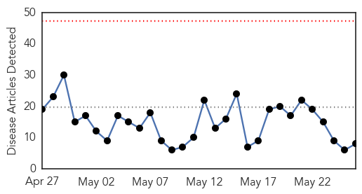
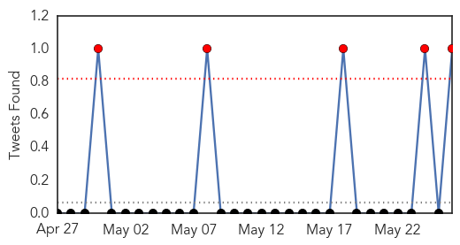
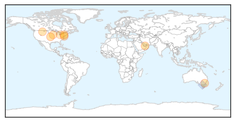

Influenza
30-Day Web Trend
0 alerts, 0 warnings

30-Day Twitter Trend
0 alerts, 0 warnings

Article Locations
Article Confidences

Top Articles:
- 1.000
- Delaware's record-breaking flu season prompts more outreach
- 0.995
- [Newsmaker] Ministry under fire for MERS response
- 0.989
- Kansas State Researchers Develop Avian Flu Vaccine
- 0.984
- Vaccines Developed for H5N1, H7N9 Avian Influenza Strains
- 0.966
- ACT health authorities develop winter health plan in bid to ease pressure on hospitals
- 0.920
- Department of Livestock Advises Against Showing Waterfowl at Events This Summer
- 0.863
- Iowa reports new bird flu cases
- 0.751
- May 26, 2015 Archives
Top Tweets:
-
No tweets found for May 26, 2015
Pertussis
30-Day Web Trend
0 alerts, 0 warnings

30-Day Twitter Trend
0 alerts, 0 warnings

Article Locations

Article Confidences

Top Articles:
Top Tweets:
-
No tweets found for May 26, 2015